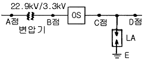
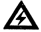
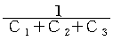
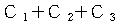
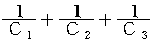
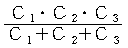
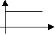
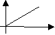
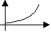
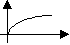

승강기기능사 (2006-01-22 기출문제)
1과목: 승강기개론
1. 승강기의 용도별 분류에서 다음 중 사람이 탑승할 수 없는 승강기는?
- 덤웨이터
- 비상용 엘리베이터
- 승용.화물용 엘리베이터
- 장애인용 수직형 리프트
(정답률: 87%)

2. 800형 에스켈레이터에서 스탭면의 수평투영면적이 7m2 일때의 적재하중은 몇 kg인가?
- 1750
- 1890
- 3110
- 3270
(정답률: 44%)
3. 전동기의 역률을 개선하기 위하여 사용되는 것은?
- 저항기
- 전력용콘덴서
- 직렬리액터
- 트립코일
(정답률: 60%)
4. 승용 승강기에서 기계실이 승강로 최상층에 있는 경우 기계실에 설치할 수 없는 것은?
- 제어반
- 권상기
- 균형추
- 조속기
(정답률: 57%)
5. 전동 덤웨이터와 구조적으로 가장 유사한 것은?
- 간이 리프트
- 엘리베이터
- 에스켈레이터
- 수평보행기
(정답률: 71%)
6. 다음의 로핑(Roping)방식 중 로프의 수명이 가장 긴방식은?
- 1:1반걸이형
- 2:1반걸이형
- 1:1전걸이형
- 2:1전걸이형
(정답률: 41%)
7. 로프식 엘리베이터에서 주로프의 안전율이 10이상이고 여러가닥의 로프를 사용하는 경우에 로프의 최소 직경은 몇 mm인가?(관련 규정 개정전 문제로 여기서는 기존 정답인 4번을 누르면 정답 처리됩니다. 자세한 내용은 해설을 참고하세요.)
- 8
- 10
- 11
- 12
(정답률: 54%)
8. 완충기의 종류를 결정하는데 반드시 필요한 조건은?
- 승강기의 용량
- 승강기의 속도
- 승강기의 용도
- 카의 크기
(정답률: 54%)
9. 정전시 예비전원에 의하여 비상용엘리베이터를 가동하여야 하는데 정전후 몇 초 이내에 운행에 필요한 전력용량을 자동적으로 발생시켜야 하는가?
- 15초
- 20초
- 40초
- 60초
(정답률: 78%)
10. 유압식 승강기에 적재하중을 100% 적재하였을 경우 상승하강때의 전류값은 정격전류값의 몇 %이하이어야 하는가?
- 125
- 135
- 145
- 150
(정답률: 25%)
11. 완충기에 관한 설명으로 옳은 것은?
- 완충기의 최대감속도는 2.5G를 초과하는 감속도가 일반적으로 1/10 초를 넘지 않아야 한다
- 완충기의 행정은 카가 정격속도의 125%로 충돌했을때 평균 감속도가 9.8m/s2이하가 되도록 한다
- 스프링 완충기는 90 m/min이상의 속도에 사용한다.
- 균형추 완충기는 스프링간 접촉없이 균형추 자중의 2배를 견디어야 한다
(정답률: 33%)
12. 에스켈레이터의 구동장치가 아닌 것은
- 감속기
- 구동체인
- 트러스
- 구동 스프로켓
(정답률: 56%)
13. 펄프의 축력은?
- 압력에 비례하고 토출량에 반비례한다.
- 압력에 반비례하고 토출량에 비례한다.
- 압력과 토출량에 비례한다
- 압력과 토출량에 반비례한다
(정답률: 69%)
14. 승객(공동주택)용 엘리베이터에서 카가 정지하고 동력이 차단되었을 때 카의 저속측 문을 손으로 여는데 필요한 힘은?
- 5kg 이상 30kg 이하
- 5kg 이상 20kg 이하
- 10kg 이상 30kg 이하
- 10kg 이상 20kg 이하
(정답률: 52%)
15. 비상용 엘리베이터에 대한 설명 중 틀린것은?
- 평상시에 승객용으로 사용할 수 있다
- 1차 소방운전 스위치로 승강기를 운전할 수 있다
- 비상용과 일반용 승강기를 나란히 배치할 수 없다.
- 자가발전장치를 사용한 예비전원으로 운전 할 수 있다.
(정답률: 42%)
2과목: 안전관리
16. 승강기를 꼭대기 틈새(상부틈)에 대한 설명으로 옳은 것은?
- 카가 최상층에 정지하였을 경우 카 바닥과 기계실 바닥간의 거리
- 카가 최상층에 정지하였을 경우 카 바닥과 카 천정간의 거리
- 카가 최상층에 정지하였을 경우 카 상부체대와 승강로 천정간의 거리
- 카가 최상층에 정지하였을 경우 카 상부체대와 기계실 천정까지의 거리
(정답률: 55%)
17. 작동유의 압력맥동을 흡수하여 진동 소음을 감소시키는 것은?
- 펌프
- 역류제지 밸브
- 필터
- 사이런서
(정답률: 71%)
18. 엘리베이터가 단독으로 설치되어 있다. 카와 홀에 호출이 여러 개 등록될 수 있으며 상승시에는 상승방향 호출에 차례로 응답하며 하강시에는 하강방향 호출에 차례로 응답하는 제어방식은?
- 싱글오토매틱방식
- 셀렉티브 콜렉티브방식
- 셀렉티브 콜렉티브 듀얼방식
- 군관리방식
(정답률: 34%)
19. 나이프스위치의 충전부가 노출되면 무엇이 위험한가?
- 누전
- 감전
- 과부하
- 과열
(정답률: 68%)
20. 안전태도교육에 대한 기본과정의 순서로 옳은 것은?
- 들어본다->시범->평가->이해.납득
- 이해.납득->평가->시범->들어본다
- 시범->이해납득->평가->들어본다
- 들어본다->이해.납득->시범->평가
(정답률: 71%)
21. 전기기구를 취급하는 작업방법으로 가장 알맞은 것은?
- 퓨즈가 끊어지면 만져도 된다
- 스위치를 넣거나 끊는 것은 정확히 한다.
- 전기기구는 정지시에 아무나 만져도 된다
- 전기기구는 담당자 부재시에는 주의해서 다룬다
(정답률: 71%)
22. 유해 또는 위험업무에 종사하는 근로자에게 사업주가 실시하는 건강진단은?
- 일반건강진단
- 임시건강진단
- 특수건강진단
- 채용건강진단
(정답률: 58%)
23. 전류의 흐름을 안전하게 하기 위하여 전선의 굵기는 가장 적당한 것으로 선정하여 사용하여야 한다. 전선의 굵기를 결정하는데 반드시 고려하지 않아도 되는 사항은?
- 전압강하
- 허용전류
- 기계적 강도
- 외부온도
(정답률: 69%)
24. 22.9kv에서 3.3kv로 강압하여 수전하는 수용가가 있다. 3.3kv 측의 부하측 접지사고를 자동개폐기에 의하여 정확하게 동작하게 하려면 접지콘덴서를 어느 점에 연력해야 하는가?

- A점
- B점
- C점
- D점
(정답률: 42%)
25. 안전점검 중 어떤 일정기간을 정해 두고 행하는 점검은?
- 수시점검
- 정기점검
- 임시점검
- 특별점검
(정답률: 84%)
26. 그림과 같은 경고표지는?

- 낙하물 경고
- 고온경고
- 방사성물질 경고
- 고압전기 경고
(정답률: 85%)
27. 산업재해의 발생원인으로는 불안전한 행동이 많은 사고의 원인이 되고 있다. 이에 해당되지 않은 것은?
- 위험장소 접근
- 안전장치 기능 제거
- 복장 보호구 잘못 사용
- 작업장소 불량
(정답률: 69%)
28. 전기 시설물의 절연을 확인하는데 도움이 되지 않는 것은?
- 절연저항 측정
- 부하전류 측정
- 누설전류 측정
- 절연내력 측정
(정답률: 33%)
29. 수평보행기의 구배가 일정 각도 이상이면 속도를 제한하고있다 그 이유로 옳은 것은?
- 전동기의 부담을 줄이기 위하여
- 승객의 안전을 확보하기 위하여
- 소비 전력을 낮추기 위하여
- 트러스외 안전율을 확보하기 위하여
(정답률: 67%)
30. 와이어 로프 클립의 체결방법으로 가장 적합한 것은?
(정답률: 65%)
3과목: 승강기보수
31. 에스켈레이터가 정격하중으로 하강하는 중 브레이크가 작동될 경우 감속도의 기준은?
- 0.1G이하
- 0.2G
- 0.5G이하
- 1G이하
(정답률: 56%)
32. 에스켈레이터를 수리할 때 지켜야 할 사항으로 적당하지 않은 것은?
- 상부 및 하부에 사람이 접근하지 못하도록 단속한다.
- 작업 중 움직일 때는 반드시 상부 및 하부를 확인하고 복창한 후 움직인다
- 주행하고자 할 때는 작업자가 안전한 위치에 있는지 확인한다.
- 동작시간을 게시한 후 시간이 되면 동작한다.
(정답률: 69%)
33. 승객용 엘리베이터에서 주 전동기를 보호하는 과부하방지장치와 같은 역할을 하는 것은 유압식 엘리베이터의 밸브중에서 어느 것인가?
- 체크밸브
- 릴리프밸브
- 다운밸브
- 스톱밸브
(정답률: 51%)
34. 권상용 와이어로프에 카 균형추 등의 물건을 견고하게 연결하고 있는 부분은 몇 본마다 강제 소켓에 바벳메탈로 채워 고정시켜야 하는가?
- 1
- 2
- 3
- 5
(정답률: 40%)
35. 로프식 승강기의 조명회로 전압이 220V인 경우 절연저항값은 몇 MΩ 이상이어야 하는가?
- 0.1
- 0.2
- 0.3
- 0.4
(정답률: 63%)
36. 조속기의 형태가 아닌 것은
- GR형
- GD형
- GF형
- GC형
(정답률: 48%)
37. 정격속도가 분당 120m인 승객용 엘리베이터의 조속기 과속스위치의 작동속도는 정격속도의 몇 배 이하에서 작동하도록 조정되어야 하는가.?
- 1.2배
- 1.3배
- 1.4배
- 1.5배
(정답률: 51%)
38. 승강기 운전 중 케이지내에서 점검해야 할 사항이 아닌 것은?
- 절연상태 양호 여부
- 주행 중 충격 소음 진동 유무
- 도어 개폐시 이상 유무
- 연락장치의 외부와의 통화 가능 여부
(정답률: 61%)
39. 단독 설치된 전자동 승개용 승강기에서 외부 승강장의 하강 부름단추가 작동되지 않았을 때 카의 작동 상태가 옳은 것은?
- 상승시에 정지한다.
- 하강시에 정지하지 않는다.
- 하강시에 정지하여 문이 닫히지 않는다.
- 하강시에 정지하여 문이 열리지 않는다.
(정답률: 44%)
40. 응급조치에 따른 승강기 보수작업으로 적당한 순서는?
- 보수내용 청취->현장 정돈(응급처치)->안전용구 착용->자재반입 및 신호->작업 착수
- 보수내용 청위->안전용구 착용->자재반입 및 신호->현장 정돈(응급조치)->작업착수
- 안전용구 착용->보수내용 청취->현장 정돈(응급조치)->자재반입 및 신호->작업착수
- 현장 정돈(응급조치)->보수내용 청취->안전용구 착용->자재반입 및 신호->작업 착수
(정답률: 33%)
41. 기계실에서 행하는 검사가 아닌 것은?
- 치차 및 베어링 검사
- 조속기의 작동상태 검사
- 배전반 등 전원설비 검사
- 오버헤드 간격검사
(정답률: 47%)
42. 펌프나 탱크 밸브류를 하나로 합친 것을 파워 유니트라고 한다. 파워 유니트에서 실린더까지를 압력배관으로 연결시키는데 파워 유니트의 출구부분에 자동차의 머플러에 해당하는 부품이 조립되어 있는데 이를 무엇이라 하는가.?
- 플런져
- 실린더
- 솔레노이드밸브
- 싸이렌서
(정답률: 35%)
43. 유압식 엘리베이터에서는 카가 상승할 때 많은 양의 열에너지가 발생한다. 이때 기동빈도가 높아 물 또는 팬으로 작동유의 온도를 (A) CENTIGRADE 이하로 내리는 것이 보통이다. 또한 한냉지에서는 (B) CENTIGRADE 이하가 되지 않도록 공운전을 시키는 등의 대책이 필요하다. A와 B의 내용에 적합한 온도는
- 50,10
- 60,5
- 50,5
- 60,10
(정답률: 56%)
44. 화물용 엘리베이터에서는 몇 %의 부하로 전속 하강중의 케이지를 위험없이 감속 정지할 수 있어야 하는가?
- 120
- 130
- 140
- 150
(정답률: 41%)
45. 승강기에 적용하는 가이드레일의 규격을 결정하는데 관계가 가장 적은 것은?
- 조속기의 속도
- 지진발생시 건물의 수평 진동력
- 비상정지 발생시 레일에 걸리는 좌굴하중
- 불균형한 큰 하중을 내리고 올릴 때 카에 발생하는 회전모멘트
(정답률: 51%)
4과목: 기계,전기기초이론
46. 전자접촉기 등의 조작회로를 접지하였을 경우 당해 전자접촉기 등이 페로될 염려가 있는 것의 접속방법으로 옳은 것은?
- 코일의 일단을 접지하지 않는 쪽의 전선에 저속할 것
- 코일의 일단을 접지측 전선에 접속할 것
- 코일과 접지측 전선사이에 반드시 개폐기가 있을 것
- 코일과 접지측 전서사이에 반드시 퓨즈를 설치할 것
(정답률: 45%)
47. 길이 1m의 봉이 인장력을 받고 0.2mm 만큼 늘어났다. 인장변형률은 얼마인가?
- 0.0001
- 0.0002
- 0.0004
- 0.00⑤
(정답률: 72%)
48. 정전용량 C1C2C3를 병렬로 접속하였을 때의 합성정전용량은?




(정답률: 55%)
49. 스프링 재료를 숏 피닝하는 이유는?
- 인장강도를 높이기 위하여
- 탄성한도를 높이기 위하여
- 피로한도를 높이기 위하여
- 경도를 증가시키기 위하여
(정답률: 56%)
50. 측정계기로서 메거의 용도를 옳게 설명한 것은?
- 전동기의 권선저항을 측정하는 계기이다.
- 절연저항을 측정하는 계기이다.
- 접지저항을 측정하는 계기이다.
- 일반 계측기로는 측정할 수 없느 저항이나 전류를 측정하는 계기이다.
(정답률: 59%)
51. 응력변형률선도에서 하중을 적게 증가시켜도 변형율이 갑자기 커지기 시작하는 점은?
- 파괴강도점
- 탄성한도점
- 극한강도점
- 항복점
(정답률: 42%)
52. 질량 1g의 물체에 1 cm/sec2 의 가속도를 주는 힘은?
- 1 N
- 1J
- 1erg
- 1dyne
(정답률: 34%)
53. 제어 시스템의 과도응답 해석에 가장 많이 쓰이는 입력의 모양은? (단, 가로축이 시간임)




(정답률: 48%)
54. 엘리베이터의 자동제어시스템에서 속응성이란?
- 제어의 신뢰성을 말한다.
- 시간에 따른 과도현상의 변화를 말한다
- 제어계의 목표값이 변하는 속도특성을 말한다.
- 목표값이 변경될 경우 피제어량이 새로운 목표값에 도달하는 속도 응답성이다.
(정답률: 57%)
55. 피측정 전압원에 계기나 측정기를 접속하면 미소한 전류가 흘러 전압원의 내부 저항에 의한 전압강하가 원인이되어서 실제의 전압보다 낮은 전압이 측정되는 효과는?
- 부하효과
- 제어백효과
- 표피효과
- 압전효과
(정답률: 42%)
56. 승강기에서 기계적으로 동작시키는 스위치가 아닌 것은?
- 조속기스위치
- 도어스위치
- 인덕터스위치
- 승강로 종점스위치
(정답률: 41%)
57. 극수 P 를 변화시켜 사용 중인 승강기의 적용 기종은?
- AC-2
- AC-VV
- DC-GD
- DC-GL
(정답률: 34%)
58. 10 Ω의 저항에 3A의 전류가 흐를 때 저항의 단자전압은 몇 V인가?
- 10
- 20
- 30
- 40
(정답률: 81%)
59. 1마력은 몇 W에 해당하는가?
- 746
- 860
- 960
- 1000
(정답률: 50%)
60. 3상 유도전동기에 대한 설명 중 틀린 것은/
- 권선형 전동기는 속도 조절이 가능하다.
- 동기속도로 운전할 수 있다
- 동기기에 비하여 구조가 튼튼하고 고장이 적다
- 직접 기동할 때는 기동전류가 많이 흐른다.
(정답률: 22%)